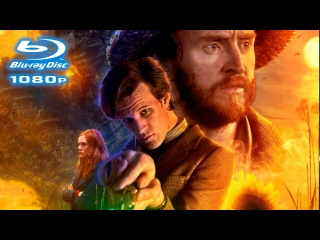
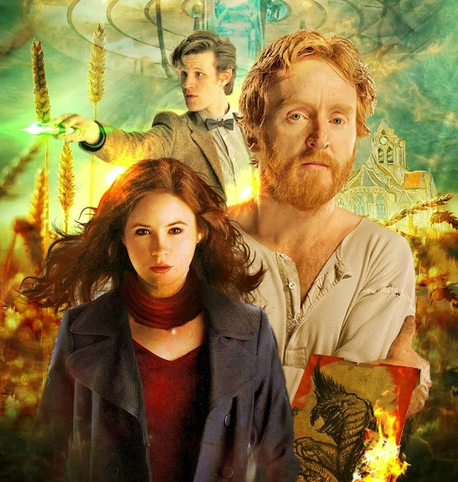
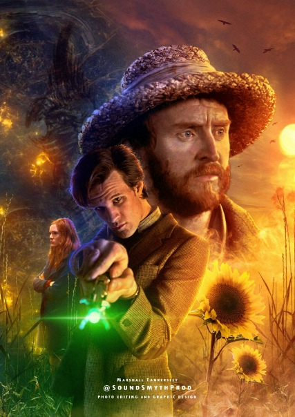
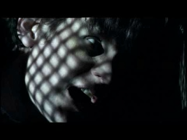

+ VO [BeeFilm]

Весь 5-й сезон (13 серий)
 + VO [BeeFilm] | Весь 5-й сезон (13 серий) |
Vincent and the Doctor
Дата выхода: 5 июня 2010
Формат: 45-минутный эпизод
| Варианты озвучек: | * Разные: смотрите по инструкции |
|---|---|
| Скачивание и просмотр: |
Доктор приводит Эми на выставку работ Ван Гога в парижском музее Орсе. На одной из картин («Церковь в Овере») они замечают небольшую деталь, которой не должно быть там — зловещую фигуру инопланетянина. Узнав у экскурсовода, когда примерно была написана картина, Повелитель Времени и его спутница отправляются в Прованс, чтобы найти Ван Гога и расспросить об инопланетянине. Как выяснилось, художник имеет очень плохую репутацию, его картины совершенно не ценятся, а сам он живёт в нищете. Возле кафе, в котором Винсент пытался расплатиться картиной, убита молодая девушка, и местные жители почему-то упрямо верят, что в этом виноват Ван Гог.


